System Design Pastebin
Online Text Storage Service
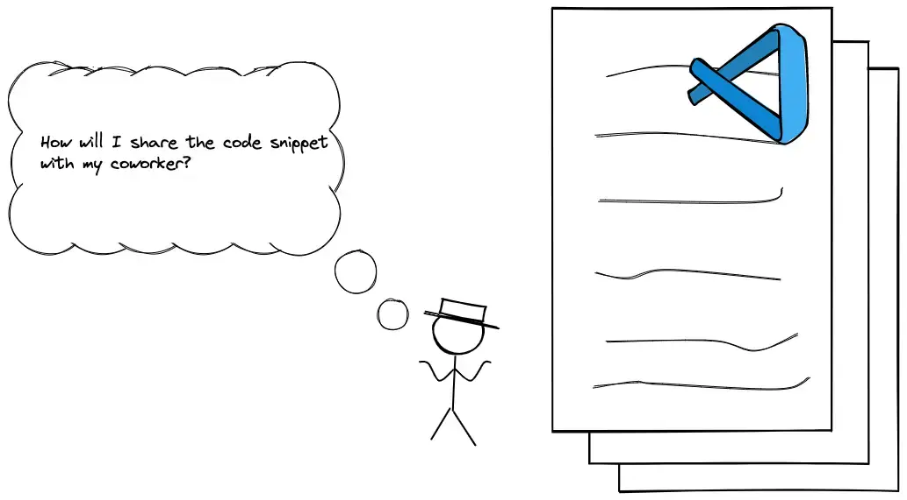
The target audience for this article falls into the following roles:
- Tech workers
- Students
- Engineering managers
The prerequisite to reading this article is fundamental knowledge of system design components. This article does not cover an in-depth guide on individual system design components.
Disclaimer: The system design questions are subjective. This article is written based on the research I have done on the topic and might differ from real-world implementations. Feel free to share your feedback and ask questions in the comments.
You can read the TL;DR on Cheatsheet. The system design of Pastebin is similar to the design of a URL shortener. I highly recommend reading the related article to improve your system design skills.
Download my system design playbook for free on newsletter signup:
How does Pastebin work?
At a high level, Pastebin executes the following operations:
- the server generates a unique paste identifier (ID) for each new paste
- the server encodes the paste ID for readability
- the server persists the paste ID in the metadata store and the paste in the object storage
- when the client enters the paste ID, the server returns the paste
Terminology
The following terminology might be useful for you:
- Encoding: the process of converting data from one form to another to preserve the usability of data
- Encryption: secure encoding of data using a key to protect the confidentiality of data
- Checksum: used to verify the integrity of a file or a data transfer
- Compression: the process of encoding, or converting the structure of data in such a way that it consumes less space on disk
- Bloom filter: a memory-efficient probabilistic data structure to check whether an element is present in a set
- Trie: a tree data structure used for locating specific keys from within a set
What is Pastebin?
A Pastebin is an online text storage service where clients can store text files. The typical text files stored on Pastebin are source code snippets and configuration files. A unique paste ID is generated for each paste. The paste ID is used by clients to view the content of the paste. Some popular public-facing Pastebin services are pastebin.com and GitHub gist.
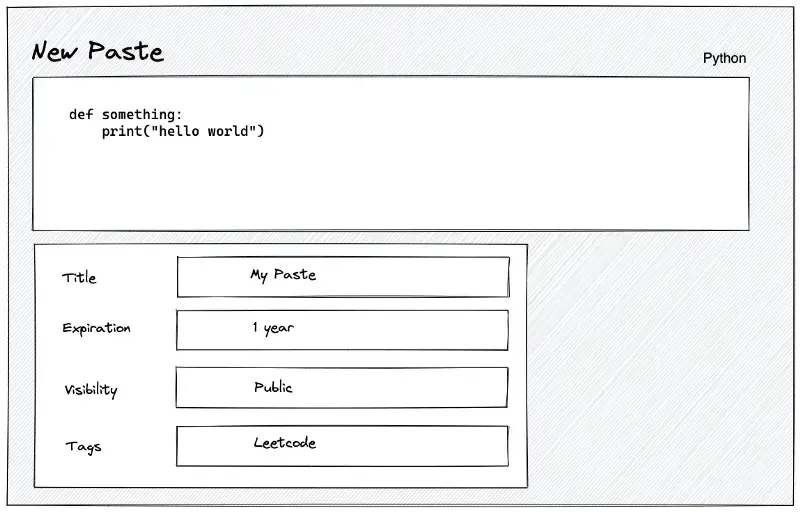
The primary reasons to use Pastebin are the following:
- share code snippets or configuration files
- solicit help with debugging
Questions to ask the Interviewer
Candidate
- What are the use cases of the system?
- What is the amount of Daily Active Users (DAU) for writes?
- How many years should we persist a paste by default?
- What is the anticipated read: write ratio of the system?
- What is the typical usage pattern of a paste by the client?
- Who will use the Pastebin service?
- What is the reasonable length of a paste ID?
Interviewer
- Store the paste and generate a unique paste ID
- 1 million DAU
- 5 years
- 10: 1
- Most of the pastes will be accessed only twice after the creation
- General public
- At most 10 characters to keep the paste ID readable
Requirements
Functional Requirements
- Online text storage service similar to pastebin.com or GitHub gist
- A client (user) enters text data into the system known as a paste
- A paste must not be greater than 1 MB in size
- The system must return a unique paste ID for each Paste
- The client visiting the paste ID must be able to view the paste
- The system must support only text-based data for a paste
- The paste ID should be readable
- The paste ID should be collision-free
- The paste ID should be non-predictable
- The client should be able to choose a custom paste ID
- The paste ID should generate an analytics report (not real-time) such as the total number of access to a paste
- The client should be able to define the expiration time of the paste
- The client should be able to delete a paste
- The client must be able to set the visibility of the paste (public, private)
- The client must be able to set an optional password for the paste
- A paste must be filtered by Pastebin to prevent questionable content
Non-Functional Requirements
- High Availability
- Low Latency
- High Scalability
- Durability
- Fault Tolerant
Out of Scope
- The user registers an account
Pastebin API
The components in the system expose the Application Programming Interface (API) endpoints through Representational State Transfer (REST) or Remote Procedure Call (RPC). The best practice to expose public APIs is through REST because of the loose coupling and the easiness to debug1. Once the services harden and performance should be tuned further, switch to RPC for internal communications between services. The tradeoffs of RPC are tight coupling and difficulty to debug2.
How to create a paste?
The client executes a Hypertext Transfer Protocol (HTTP) POST request to create a new paste on the server. The POST requests are not idempotent. In layman’s terms, each HTTP request must create a new paste and not update an existing paste.
|
|
The description of Pastebin creation HTTP request headers is the following:
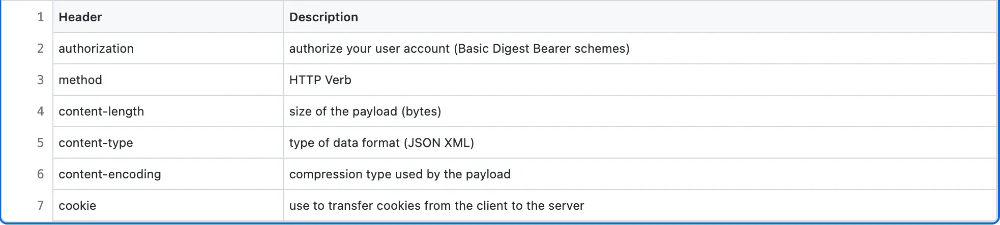
The description of Pastebin creation HTTP request body parameters is the following:
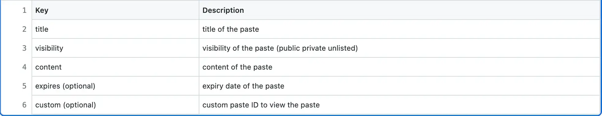
The server responds with a status code of 302 Found for success. The location header in the HTTP response contains the paste ID Uniform Resource Locator (URL) to access the created paste3.
|
|
The client automatically executes another HTTP GET request to the received paste ID URL to access the created paste.
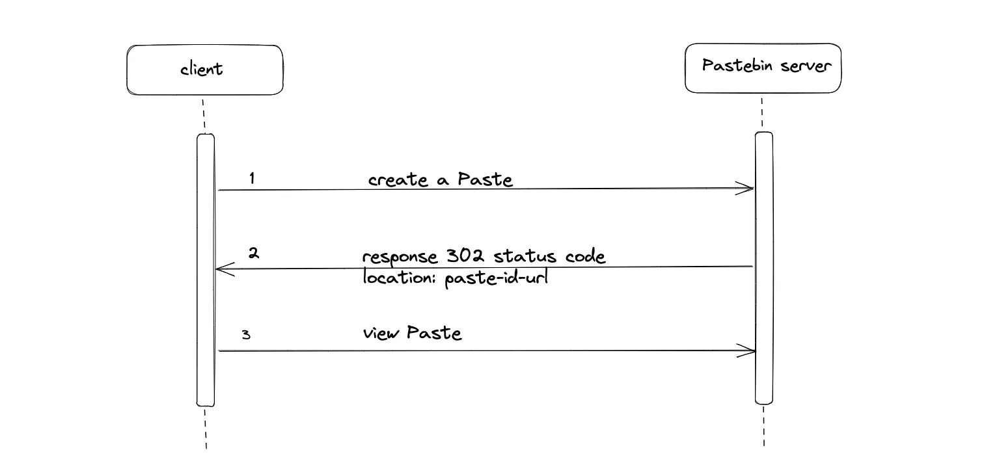
As an alternative, the server responds with status code 201 Created. The payload of the response contains the paste ID to access the created paste. The client must execute another HTTP request with the received paste ID.
|
|
If the server supports multipart/form-data, the client can execute a multipart/form-data request to transfer large files in chunks. However, the multipart/form-data is significantly more complicated.
|
|
The description of Pastebin creation HTTP multipart/form-data request headers is the following:
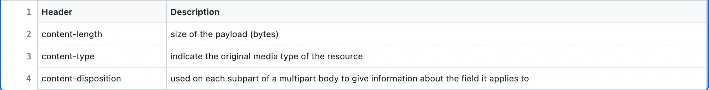
The client receives the status code 403 forbidden when the client has valid credentials but not sufficient privileges to create a paste.
|
|
In summary, use the 302 or 201 status code in the HTTP response and the POST method in the HTTP request to meet the system requirements.
How to view a paste?
The client executes an HTTP GET request to view a paste. There is no request body for an HTTP GET request.
|
|
The description of Pastebin HTTP request headers to view a paste is the following:
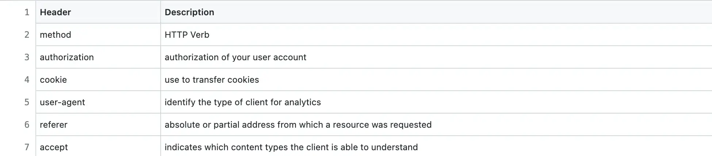
The server responds with status code 200 OK for success. The typical usage pattern of a paste is to access it at most twice after creation. The cache-control HTTP response header is set to private to cache the response on the client. The client cache is used to serve future HTTP requests to access the paste and prevent unnecessary network communication.
|
|
The content-encoding header defines the compression scheme used in the response payload. The content-type header indicates the data format of the response payload (JSON, XML, HTML). The description of Pastebin HTTP response payload parameters for viewing a paste is the following:
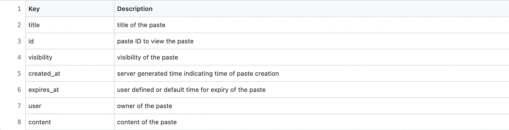
If Pastebin allows the owner to edit an existing paste, the client can execute a conditional HTTP request to check if the paste has been modified since the last access to the paste4. If the paste is not modified by the owner, the client reuses the cached version of the paste. The If-Modified-Since HTTP request header is used to execute a conditional request.
|
|
The server responds with status code 304 Not modified to indicate that the paste was not modified since the timestamp specified in the If-Modified-Since request header.
|
|
The client receives a status code 403 forbidden if the client has valid credentials but not sufficient privileges to act on the resource.
|
|
The server responds with the status code 404 Not Found when the client executes a request to access a paste that does not exist in the database.
|
|
In summary, use the status code 200 in the HTTP response for a GET request to meet the system requirements.
How to delete a paste?
A registered client can delete an owned paste. The client executes an HTTP DELETE request to the server to delete a paste. The authorization HTTP request header is used to authorize the client. The cookie request header transfer the cookies, which can be used to authorize an anonymous client.
|
|
The server responds with status code 204 No Content on the successful deletion of a paste. There is no response body.
|
|
The server responds with the status code 404 Resource not found when the client tries to delete a paste that does not exist.
|
|
In summary, use the status code 204 in the HTTP response for a DELETE request to meet the system requirements.
Further system design learning resources
Download my system design playbook for free on newsletter signup:
Data Storage
Pastebin is a read-heavy system. In other words, the dominant usage pattern is the client viewing a paste.
Database schema design
The major entities of the database (data store) are the Pastes table, the Users table, and the Permissions table. The relationship between the Users and the Pastes tables is 1-to-many. A user might create multiple pastes but a paste is owned only by a single user. The Permissions table is an associative entity that defines the access control list of a paste. For instance, a single user might be able to access multiple pastes. On the other hand, a paste might be accessible to multiple users (a many-to-many relationship).
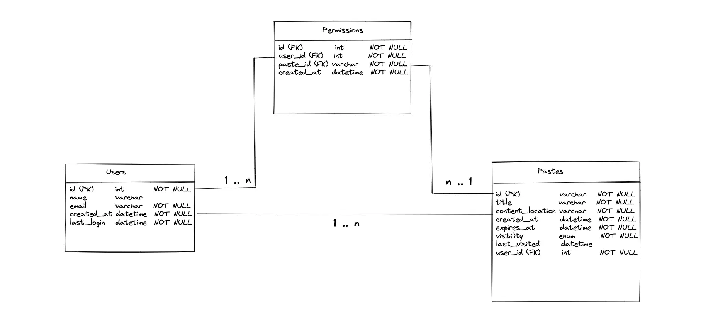
The paste with public visibility is accessible to every client. The paste with private visibility is accessible only to clients with access permission set in the Permissions table.
Pastes table
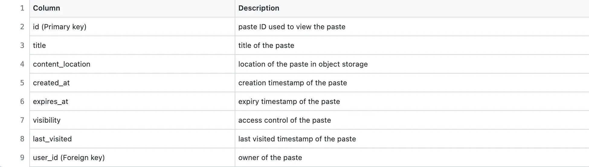
Sample data of Pastes table
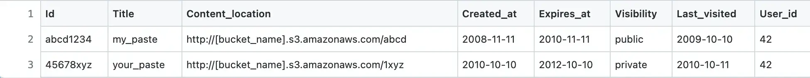
Users table
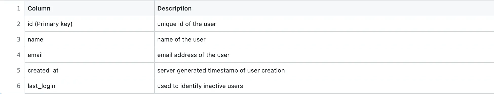
Sample data of Users table
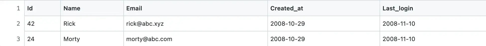
Permissions table
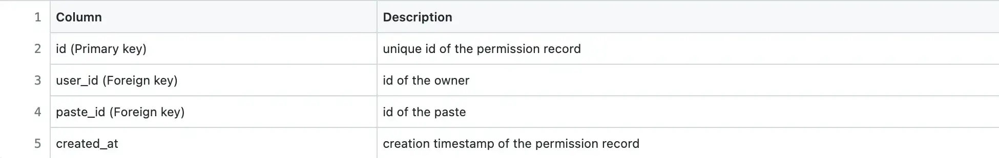
Sample data of Permissions table
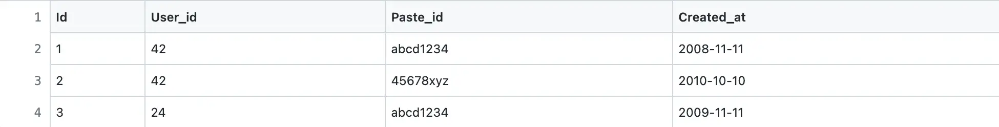
SQL
Structured Query Language (SQL) is a domain-specific language used for managing data held in a relational database management system. The most popular SQL queries asked in system design interviews are SELECT, JOIN, INSERT, and GROUP BY statements.
Write a SQL query to fetch the title of all pastes created by the user Rick
|
|
Write a SQL query to fetch the latest 10 pastes in reverse chronological order
|
|
Write a SQL query to create a new paste
|
|
Type of data store
The paste content is text data, which is unstructured. The paste content has larger storage requirements than the metadata of the paste. The content of a paste is stored in a managed object storage such as AWS S3. The paste (text data file) is identified using a unique key (paste URL) in object storage. An alternative to AWS S3 is using MongoDB or Riak S2. The following are the reasons to use object storage for persisting paste content5:
- handles large amounts of unstructured data
- affordable consumption model
- unlimited scalability
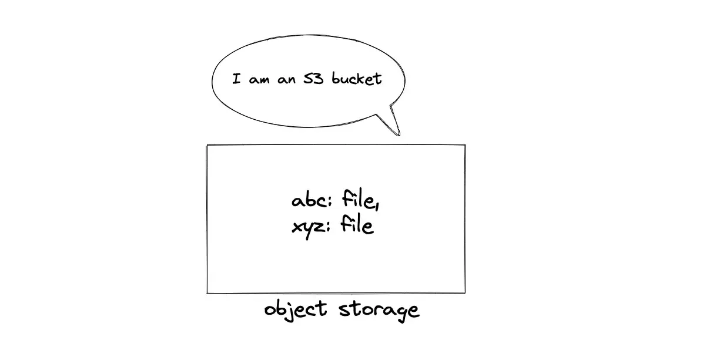
A SQL database such as Postgres or MySQL is used to store the metadata of the paste. The metadata stored in the SQL database includes the paste URL. The reasons to choose a SQL store for storing the metadata are the following:
- strict schema
- relational data
- need for complex joins
- lookups by index are pretty fast
When the client requests to view a paste, the server queries the SQL database to fetch the metadata of the paste. The metadata of the paste includes the paste ID. The client views the paste in object storage using the paste ID received from the server.
Capacity Planning
The total number of registered users is relatively limited compared to the total number of pastes created. The calculated numbers are approximations. A few helpful tips on capacity planning for a system design are the following:
- 1 million requests/day = 12 requests/second
- round off the numbers for quicker calculations
- write down the units when you do conversions
Traffic
Pastebin is a read-heavy system. The Daily Active Users (DAU) for writes is 1 million. The Query Per Second (QPS) for reads is approximately 100.
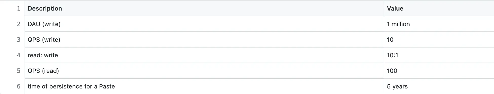
Storage
A paste persists by default for 5 years in the data storage. The size of each character is assumed to be 1 byte.
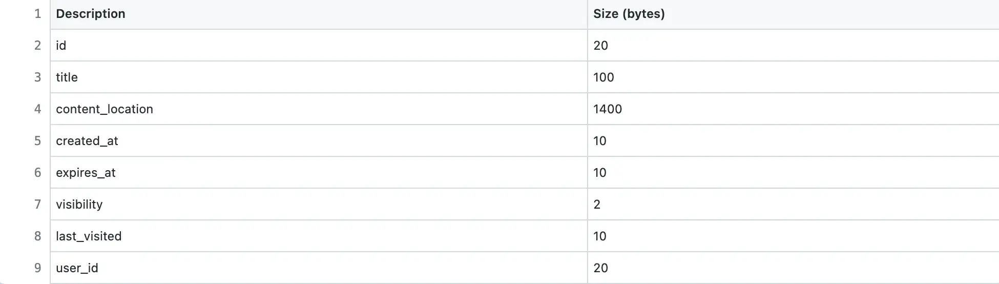
In total, the paste metadata record is approximately 1.5 KB in size. However, the maximum size of the paste content is 1 MB.
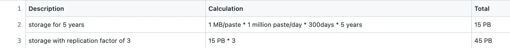
The replication factor for storage is set to three for improved durability and disaster recovery.
Bandwidth
Ingress is the network traffic that enters the server (client requests). Egress is the network traffic that exits the servers (server responses).
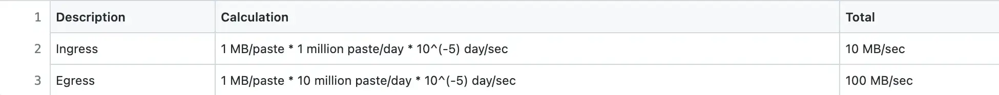
Memory
The Pastebin traffic (egress) is cached to improve the latency. Following the 80/20 rule, 80% of egress is served by 20% of pastes stored on cache servers. The remaining 20% of the egress is served by the data store to improve the latency. A Time-to-live (TTL) of 1 day for the cache is reasonable.
Capacity Planning Summary
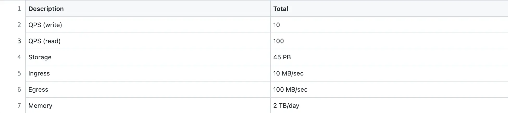
Further system design learning resources
Download my system design playbook for free on newsletter signup:
High-Level Design
Encoding
Encoding is the process of converting data from one form to another. The paste ID is encoded to improve readability. The encoding format used in Pastebin must yield a deterministic (no randomness) output. The potential data encoding formats that satisfy the use case of Pastebin are the following:
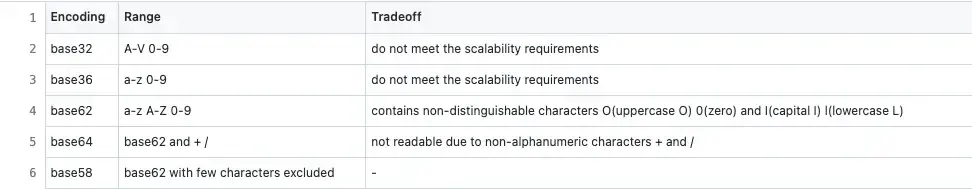
The base58 encoding format is similar to base62 encoding except that base58 avoids non-distinguishable characters such as O (uppercase O), 0 (zero), and I (capital I), l (lowercase L). The characters in base62 encoding consume 6 bits (2⁶ = 64). A paste ID of 8 characters in length in base62 encoding consumes 48 bits.
The following generic formula is used to count the total number of paste IDs that are produced using a specific encoding format and the number of characters in the output:
Total count of paste IDs = branching factor ^ depth
where the branching factor is the base of the encoding format and depth is the length of characters.
The combination of encoding formats and the output length generates the following total count of paste IDs:
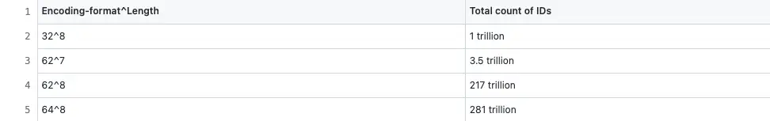
The total count of paste IDs is directly proportional to the length of the encoded output. However, the length of the paste ID must be kept as short as possible for better readability. The base62 encoded output of 8-character length generates 217 trillion paste IDs. A total count of 217 trillion paste IDs satisfies the Pastebin system requirements. The base32 encoded output of 8-character length also satisfies the system requirement. However, the reservation of additional paste IDs makes it easier for the future growth of the system. The general guidelines on the encoded output format to improve the readability of the paste ID are the following:
- the encoded paste ID contains only alphanumeric characters
- the length of the paste ID must not exceed 10 characters
The time complexity of base conversion is O(k), where k is the number of characters (k = 8). The time complexity of base conversion is reduced to constant time O(1) because the number of characters is fixed6.
In summary, an 8-character base62 encoded output satisfies the system requirement.
Write path
When the client enters a new paste in Pastebin, the server generates a unique paste ID. The paste ID is encoded for improved readability. The server persists the paste ID into the SQL database and the content of the paste in object storage. The simplified block diagram of a single-machine Pastebin is the following:
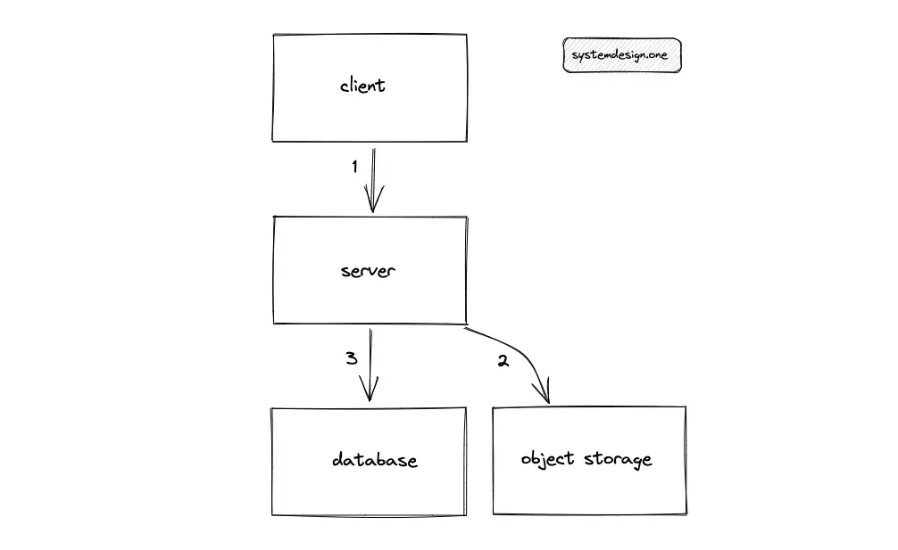
The single-machine solution does not meet the scalability requirements of Pastebin. The key generation function is moved out of the server to a dedicated Key Generation Service (KGS) to scale out the system.
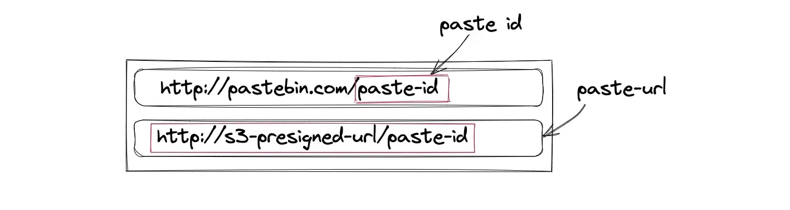
The following operations get executed when the client enters a paste into Pastebin:
- Writes to Pastebin are rate limited
- KGS creates a unique encoded paste ID
- The object storage returns a presigned URL
- The paste URL (http://presigned-url/paste-id) is created by appending the generated paste ID to the suffix of the presigned URL
- The paste content is transferred directly from the client to the object storage using the paste URL to optimize bandwidth expenses and performance
- The object storage persists the paste using the paste URL
- The metadata of the paste including the paste URL is persisted in the SQL database
- The server returns the paste ID to the client for future access
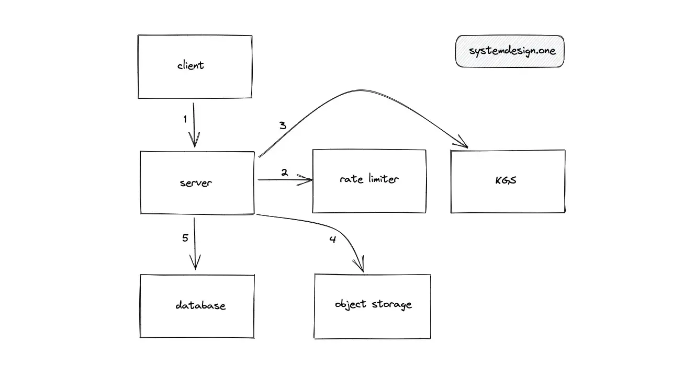
The system must rate limit the ingress to prevent malicious clients from degrading the service. A reasonable rate limit for the write path is a maximum count of 10 pastes every 24 hours for a single client. The paste is processed by executing the following operations:
- validate the content for text-only data
- filter for questionable content (profanity) using a trie data structure or a bloom filter
- calculate the checksum of content using Cyclic Redundancy Check 32 (CRC32) to detect data corruption and increase fault tolerance
- compress the content using Huffman coding to save storage costs and reduce the latency of data transfer
- encrypt the content using Advanced Encryption Standard (AES) for security
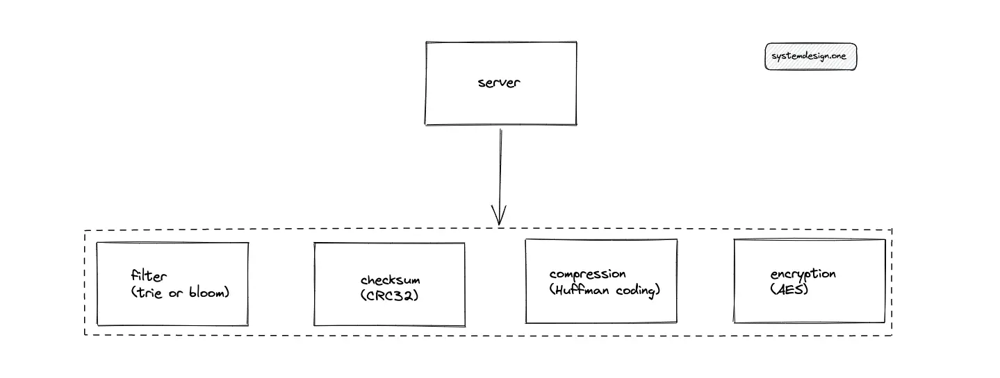
The paste can be processed asynchronously by introducing a message queue in the system to collect the message when a new paste is created. The paste is marked for deletion and the client is notified if the paste fails the validation checks.
When the owner password protects a paste, the server persists the hash of the password in the SQL database. The client is prompted to enter a password to access the protected paste. The server checks if the hash of the entered password is the same as the stored hash value.
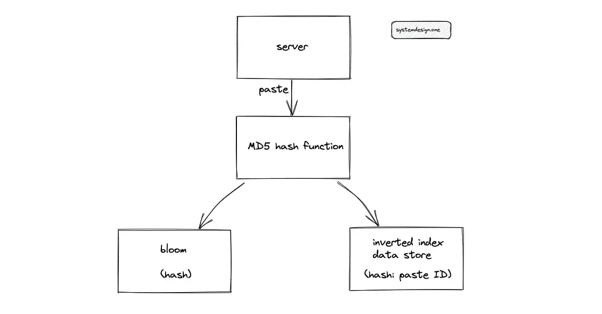
When multiple clients enter the same paste content (text), Pastebin can either store multiple copies of the paste content or reuse the same paste content across multiple clients. Pastebin must make the following changes to reuse the paste content:
- hash the paste content using MD5 or SHA-256 to aid in quick validation of the existence of a paste
- the hash of paste must be stored in a bloom filter for faster lookups
- inverted index data store mapping between the hash value of the paste and paste ID
- data store mapping between the paste ID and the expiry time of the paste for each client
- lock (mutex) or semaphore to handle concurrency
In conclusion, reusing the paste content across multiple clients increases the complexity of the system. The optimal solution is to create multiple copies of the paste to reduce financial costs and operational complexity.
The potential solutions to create the paste ID are the following:
- Random ID Generator
- Hashing Function
- Token Range
- Custom paste ID
Random ID Generator solution
The Key Generation Service (KGS) queries the random identifier (ID) generation service to create a paste ID. The service generates random IDs using a random function or Universally Unique Identifiers (UUID). Multiple instances of the random ID generation service must be provisioned to meet the demand for scalability.
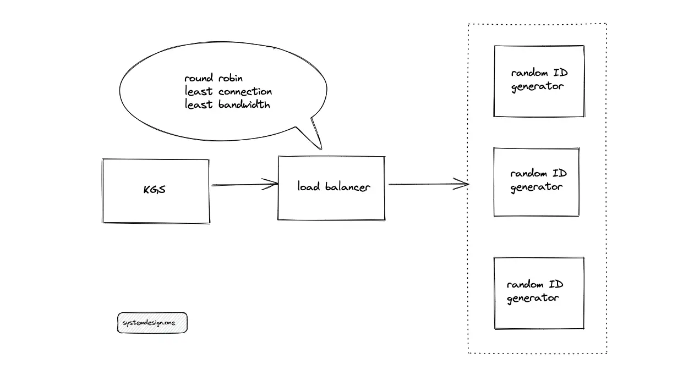
The random ID generation service must be stateless to replicate the service for scaling easily. The ingress is distributed to the random ID generation service using a load balancer such as HAProxy. The potential load-balancing algorithms to route the traffic are the following:
- round-robin
- least connection
- least bandwidth
The KGS must verify if the generated paste ID already exists in the database because of the randomness in the output. The random ID generation solution has the following tradeoffs:
- the probability of collisions is high due to randomness
- coordination between servers is required to prevent a collision
- frequent verification of the existence of a paste ID in the database is a bottleneck due to disk input/output (I/O)
An alternative to the random ID generation solution is using Twitter’s Snowflake7. The length of the snowflake output is 64 bits. The base62 encoding of snowflake output yields an 11-character output because each base62 encoded character consumes 6 bits. The snowflake ID is generated by a combination of the following entities (real-world implementation might vary):
- Timestamp
- Data center (DC) ID
- Worker node ID
- Sequence number
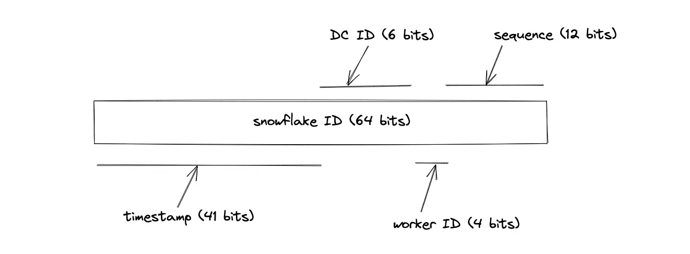
The downsides of using snowflake ID for ID generation are the following:
- probability of collision is higher due to the overlapping bits
- generated paste ID becomes predictable due to known bits
- increases the complexity of the system due to time synchronization between servers
In summary, do not use the random ID generator solution for Pastebin.
Hashing Function solution
The KGS queries the hashing function service to create a paste ID. The hashing function service accepts a combination of the IP address of the client and the timestamp as the input and executes a hash function such as the message-digest algorithm (MD5) to create a paste ID. The length of the MD5 hash function output is 128 bits. The hashing function service is replicated to meet the scalability demand of the system.
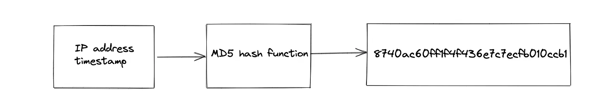
The hashing function service must be stateless to replicate the service for scaling easily. The ingress is distributed to the hashing function service using a load balancer. The potential load-balancing algorithms to route the traffic are the following:
- weighted round-robin
- least response time
- IP address hash
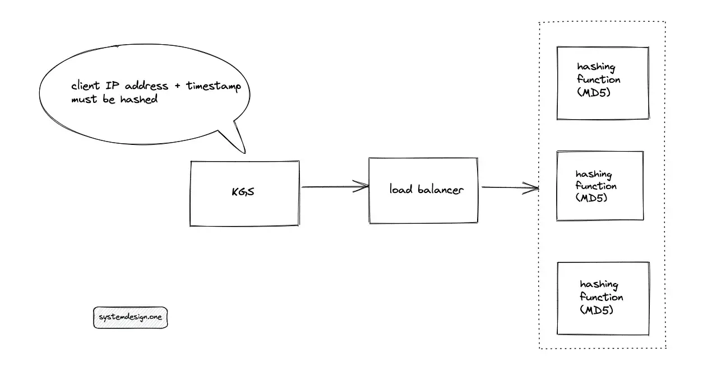
When multiple clients behind the same public IP address try to create a paste at the same time, the hashing function service results in a collision of the paste ID generated. As an alternative, a combination of the timestamp and content of the paste is used as input for the hash function. However, when multiple clients enter the same paste content at the same time, a collision occurs.
The base62 encoding of MD5 output yields 22 characters because each base62 encoded character consumes 6 bits and MD5 output is 128 bits. The encoded output must be truncated by considering only the first 8 characters (48 bits) to keep the paste ID readable. However, the encoded output of multiple paste IDs might yield the same prefix (first 8 characters), resulting in a collision. Random bits are appended to the suffix of the encoded output to make it nonpredictable at the expense of paste ID readability.
An alternative hashing function for paste ID generation is SHA256. However, the probability of a collision is higher due to an output length of 256 bits. The tradeoffs of the hashing function solution are the following:
- predictable output due to the hash function
- higher probability of a collision
In summary, do not use the hashing function solution for Pastebin.
Token Range solution
The KGS queries the token service to create a paste ID. An internal counter function of the token service generates the paste ID and the output is monotonically increasing.
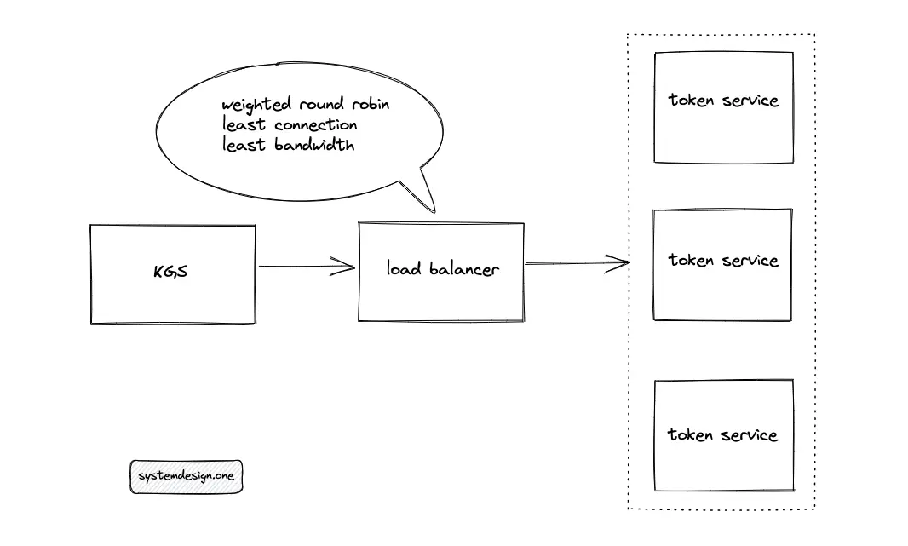
The token service is horizontally partitioned (shard) using range partitioning to meet the scalability requirements of the system. The ingress is distributed to the token service using a load balancer. The potential load-balancing algorithms to route the ingress are the following:
- weighted round-robin
- least connection
- least bandwidth
The output of the token service instances must be non-overlapping to prevent a collision. A highly reliable distributed service such as Apache Zookeeper or Amazon DynamoDB coordinates the output range of token service instances. The service that coordinates the output range between token service instances is known as the token range service.
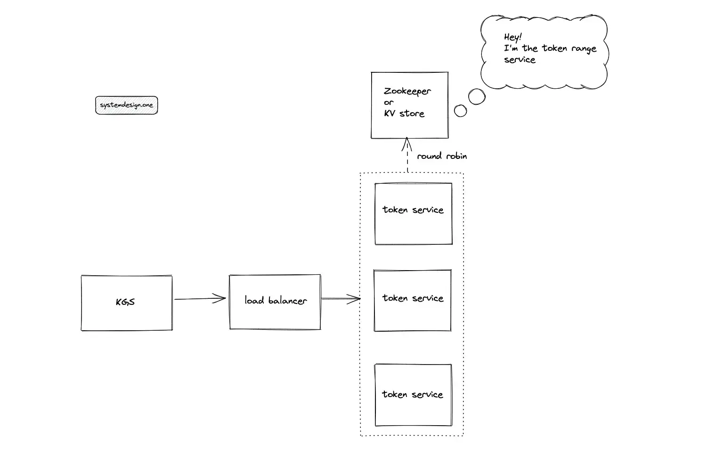
When the key-value store (DynamoDB) is chosen as the token range service, the quorum must be set to a higher value to increase the consistency of the token range service. The stronger consistency prevents a range collision by preventing fetching the same output range by multiple token services.
When an instance of the token service is provisioned, the fresh instance executes a request for an output range from the token range service. When the fetched output range is fully exhausted, the token service requests a fresh output range from the token range service.
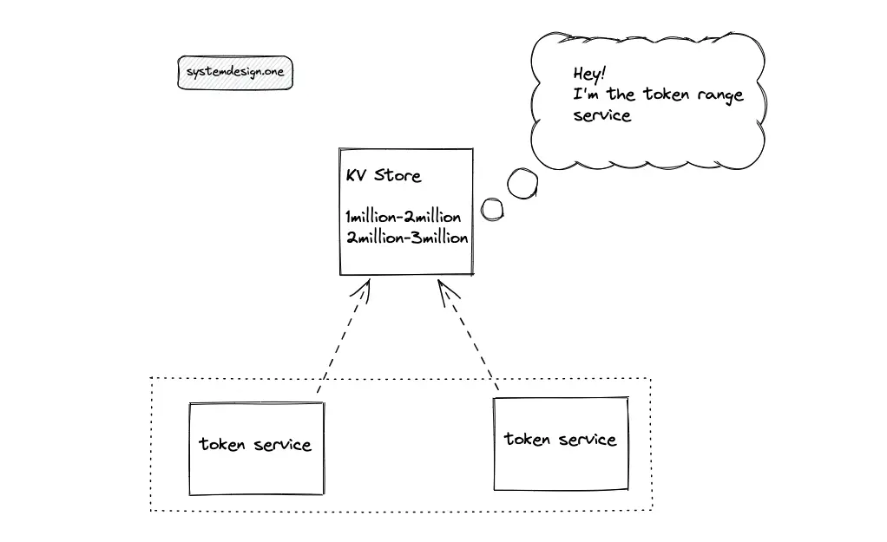
The token range service might become a bottleneck if queried frequently. Either the output range or the number of token range service replicas must be incremented to improve the reliability of the system. The token range solution is collision-free and scalable. The time complexity of paste ID generation using token service is constant O(1). However, the paste ID is predictable due to the monotonically increasing output range. The following actions degrade the predictability of the paste ID:
- append random bits to the suffix of the output
- token range service distributes a randomized output range
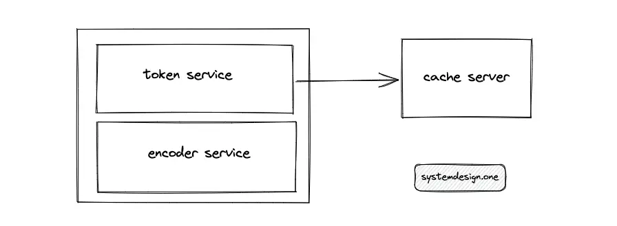
The token service stores some paste IDs (keys) in memory so that the token service quickly distributes the keys to an incoming request. The keys in the token service must be distributed by an atomic data structure to handle concurrent requests. The output range must be moved out to an external cache server to scale out the token service and improve its reliability. The output range stored in the memory of the token service is marked as used to prevent a collision. The downside of storing keys in memory is losing the specific output range of keys on a server failure.
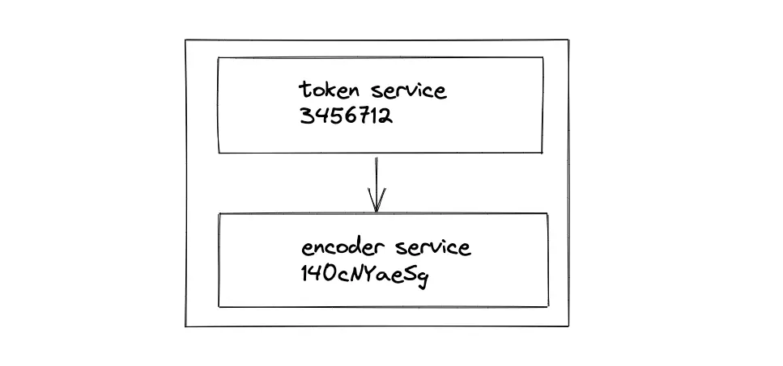
The output of the token service must be encoded within the token server using an internal encoding service to prevent external network communication. An additional function executes the encoding of token service output.
In summary, use the token range solution for Pastebin.
Custom paste ID solution
The client defines a custom paste ID. The KGS must perform one of the following operations when the client enters a custom paste ID:
- query the SQL database to check the existence of the paste ID
- use the putIfAbsent SQL procedure to check the existence of the paste ID
However, querying the database is an expensive operation because of the disk I/O.
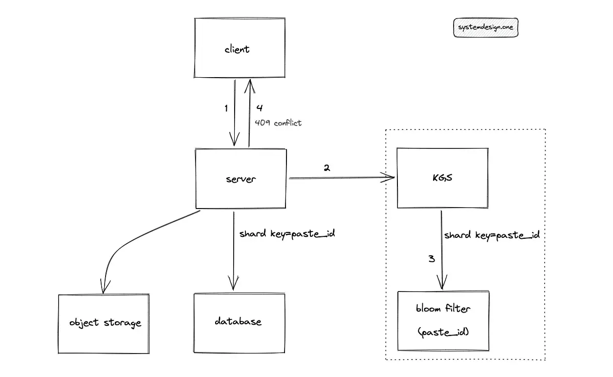
A bloom filter is used to prevent expensive database lookups. When the client enters an already existing custom paste ID, the server must return an error message with HTTP response status code 409 Conflict. The KGS queries the bloom filter in constant time O(1) to check if the custom paste ID already exists in the database8. However, the bloom filter query might yield false positives, resulting in an unnecessary database lookup, which is acceptable. In addition, the bloom filter increases the operational complexity of the system.
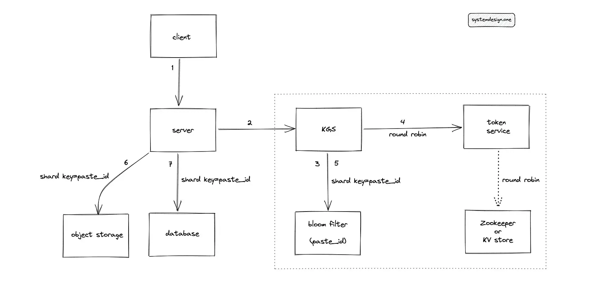
The following operations are executed by Pastebin when the client enters a custom paste ID that does not exist in the database:
- KGS queries the bloom filter to check if the custom paste ID already exists in the database
- The token service creates a paste ID
- KGS populates the bloom filter with the generated paste ID
- The server stores the paste content in object storage
- The metadata of the paste is stored in the SQL database
In summary, use a bloom filter to improve the performance of the custom paste ID solution for Pastebin.
Read path
When the client enters the paste ID to view the paste, the server queries the SQL database to fetch the metadata of the paste. The server uses the received metadata to fetch the paste by querying the object storage. If the paste metadata is not found in the SQL database, the servers return an error message with the status code 404 Not found for the client.
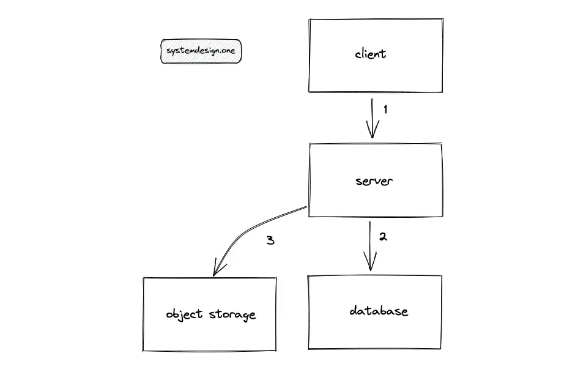
The single-machine solution does not meet the scalability requirements of a read-heavy Pastebin. The disk I/O due to frequent database access is a potential bottleneck.
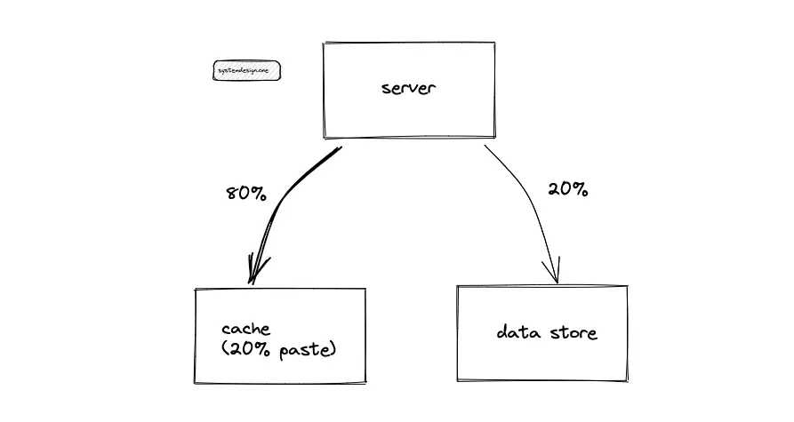
The egress (client requests to view a paste) is cached following the 80/20 rule to improve latency. The cache stores the paste and the relevant paste metadata. The paste ID is used as the cache’s key to identify the paste content. The cache handles uneven traffic and traffic spikes in egress. The server must query the cache before hitting the data store. The cache-aside pattern is used to update the cache. When a cache miss occurs, the server queries the data stores and populates the cache. The tradeoff of using the cache-aside pattern is the delay in initial requests. As the data stored in the cache is memory bound, the Least Recently Used (LRU) policy is used to evict the cache when the cache server is full.
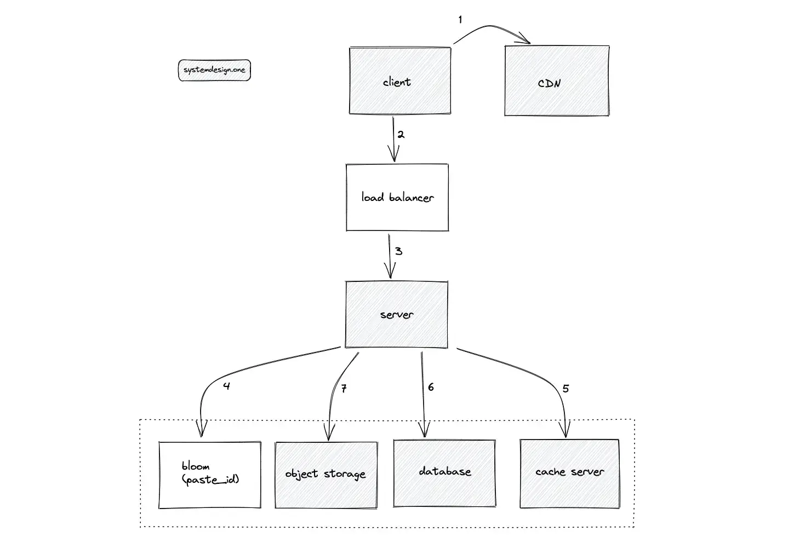
The cache is introduced at the following layers of the system for scalability:
- client
- content delivery network (CDN)
- reverse proxy (web server)
- cache server
- internal cache on the data store
A public cache such as CDN or a dedicated shared cache server reduces the load on the system. On the other hand, the private cache is only accessible to the client and does not significantly improve the system’s performance. In addition, setting the TTL for the private cache is crucial because private cache invalidation is difficult. Dedicated cache servers such as Redis or Memcached are provisioned between the following system components to further improve latency:
- server and data stores
- load balancer and server
The typical usage pattern of the client is to access the paste at most twice after creation. The cache update on a single access to the paste results in cache thrashing. A bloom filter on paste IDs is introduced on cache servers and CDN to prevent cache thrashing. The bloom filter is updated when the paste is accessed is twice by the client. The cache servers are updated only when the bloom filter is already set (multiple requests to the same paste ID). The client cache prevents populating the public cache (CDN) for pastes accessed only by the owner.
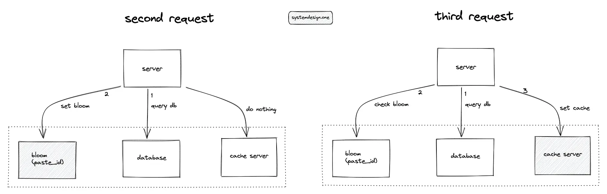
The cache and the data store must not be queried if the paste does not exist. A bloom filter on the paste ID is introduced to prevent unnecessary queries to the data store. If the paste ID is absent in the bloom filter, return an HTTP status code of 404. If the paste ID is set in the bloom filter, delegate the client request to the cache server or the data store.
The database servers and cache servers are scaled out by performing the following operations:
- partition the servers (use the paste ID as the partition key)
- replicate the servers to handle heavy loads using leader-follower topology
- redirect the write operations to the leader
- redirect all the read operations to the follower replicas
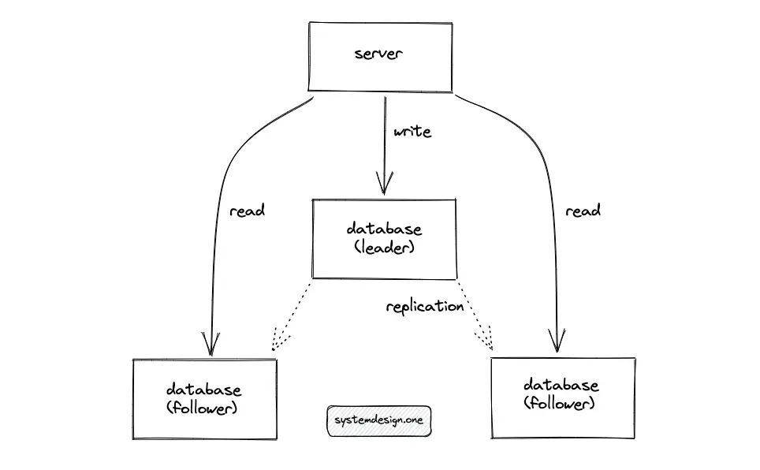
The read replicas of the SQL database should be able to handle the cache misses, as long as the replicas are not swamped with replicating writes. When multiple identical requests arrive at the cache server at the same time, the cache server will collapse the requests and will forward a single request to the origin server on behalf of the clients. The response is reused among all the clients to save bandwidth and system resources.
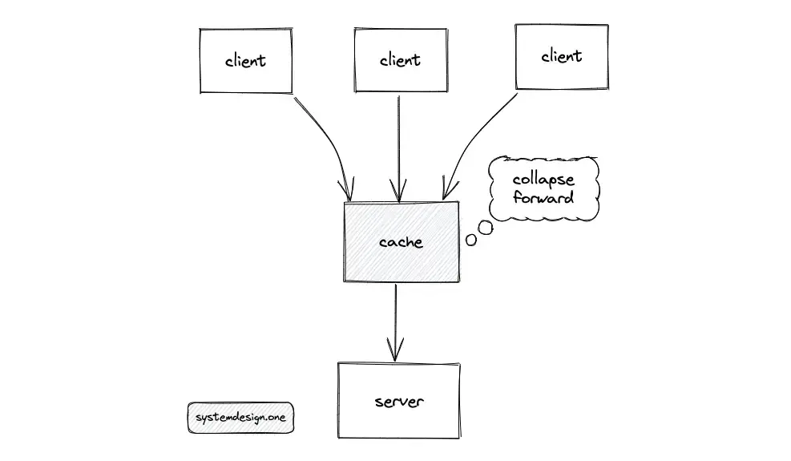
The following intermediate components are introduced to meet the scalability demand for Pastebin:
- Domain Name System (DNS)
- Load balancer
- Reverse proxy
- CDN such as CloudFront
- Controller service to automatically scale the services
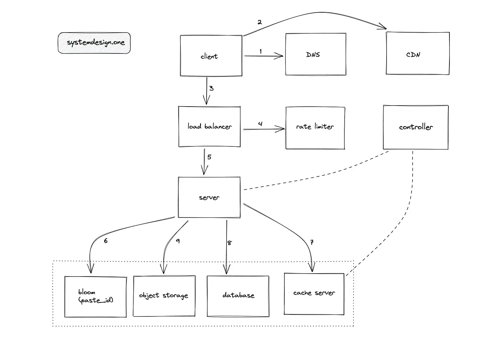
The following smart DNS services improve the latency for accessing a paste:
- weighted round-robin
- latency based
- geolocation based
The reverse proxy is used as an API Gateway. The reverse proxy performs SSL termination and compression at the expense of increased system complexity. When an extremely popular paste is accessed by hundreds of clients at the same time, the reverse proxy collapse forwards the requests to reduce the system load. The load balancer must be introduced between the following system components to route traffic between the replicas or shards:
- client and server
- server and data stores
- server and cache server
The CDN serves the content from locations closer to the client at the expense of increased financial costs. The Pull CDN approach suits the Pastebin system requirements. The controller service is configured to automatically scale out or scale down the services based on the system load.
The microservices architecture improves the fault tolerance of the system. The services such as etcd or Zookeeper help services to find each other (known as service discovery). In addition, the Zookeeper is configured to monitor the health of the services by sending regular heartbeat signals. The downside of microservices architecture is the increased operational complexity.
Download my system design playbook for free on newsletter signup:
Design Deep Dive
Availability
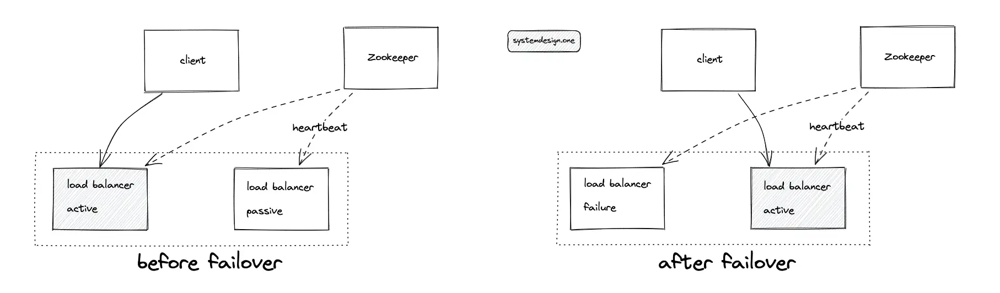
The availability of the system is improved by the following configuration:
- The load balancer runs either in active-active or active-passive mode
- KGS runs either in active-active or active-passive mode
- Back up the database server at least once a day to object storage such as AWS S3 to aid disaster recovery
- Rate-limiting the traffic to prevent DDoS attacks and malicious users
Rate Limiting
Rate limiting the system prevents malicious clients from degrading the service. The following entities are used to identify the client for rate limiting:
- API developer key for a registered client
- HTTP cookie for an anonymous client
The API developer key is transferred either as a JSON Web Token (JWT) parameter or as a custom HTTP header. The Internet Protocol (IP) address is also used to rate limit the client.
The requests from premium clients and the free clients are rate limited or throttled differently based on the membership plan. The automated spam protection system displays a captcha request to the client. The following actions of the client trigger the captcha spam protection:
- client flooding the system with more than 10 new pastes in less than an hour
- creating pastes with hyperlinks in the content
- single client creating duplicate pastes
- creating pastes with questionable content
Scalability
Scaling a system is an iterative process. The following actions are repeatedly performed to scale a system9:
- benchmark or load test
- profile for bottlenecks or a single point of failure (SPOF)
- address bottlenecks
The read and write paths of Pastebin are segregated to improve the latency and to prevent network bandwidth from becoming a bottleneck.
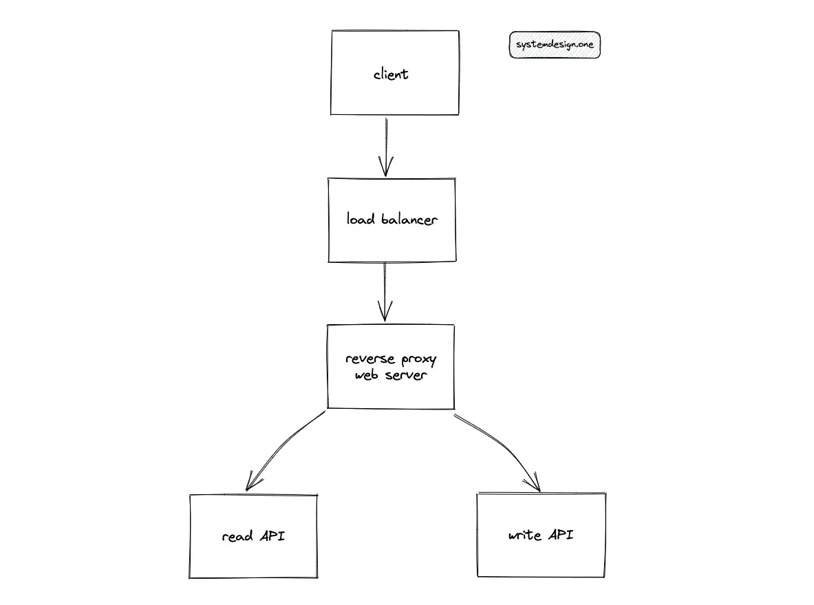
The general guidelines to horizontally scale a service are the following10:
- keep the service stateless
- partition the service
- replicate the service
Fault tolerance
The microservices architecture improves the fault tolerance of the system. The microservices are isolated from each other and the services will fail independently. Simply put, a service failure means reduced functionality without the whole system going down. For instance, a metric service’s failure will not prevent the client from viewing a paste. The event-driven architecture also helps to isolate the services and improve the reliability of the system, and scale by naturally supporting multiple consumers11.
The introduction of a message queue such as Apache Kafka further improves the fault tolerance of Pastebin. The message queue must be provisioned in the read and write paths of the system. However, the message queue must be checkpointed frequently for reliability.
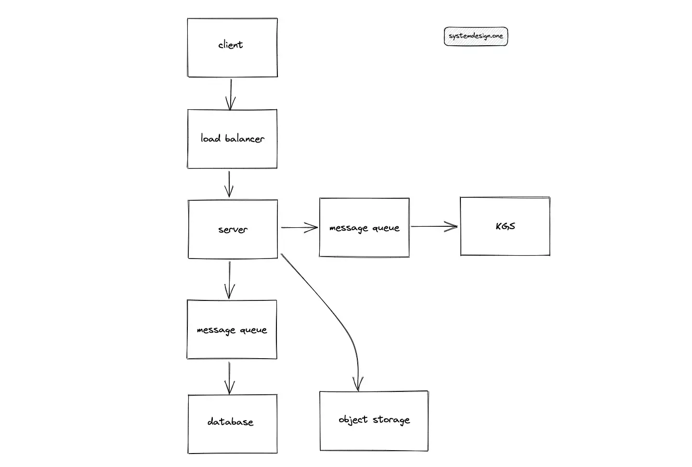
The reasons for using a message queue are the following11:
- isolate the components
- allows concurrent operations
- fails independently
- asynchronous processing
The tradeoffs of using a message queue are the following:
- makes the system asynchronous
- increases the overall system complexity
Further actions to optimize the fault tolerance of the system are the following:
- implement backpressure between services to prevent cascading failures
- services must exponentially backoff when a failure occurs for a faster recovery
- leader election implemented using Paxos or Raft consensus algorithms
- snapshot or checkpoint stateful services such as the cache server
Partitioning
The SQL database and cache servers are partitioned using consistent hashing. The paste ID is used as the partition key to prevent hot shards. The following stateful services are partitioned for scalability:
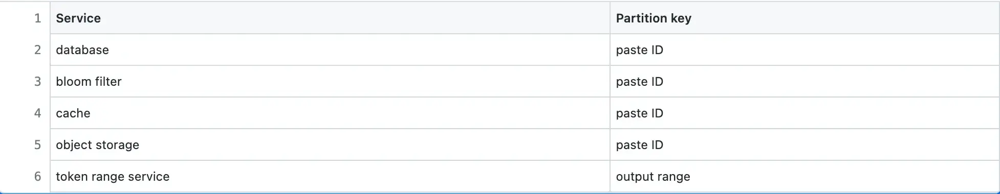
Concurrency
The KGS must acquire a mutex (lock) or a semaphore on the atomic data structure distributing the paste IDs to handle concurrency. The lock prevents the distribution of the same paste ID to distinct paste creation requests from the KGS, resulting in a collision. Multiple data structures distribute the paste ID in a single instance of the token service to improve latency. The lock must be released when the paste ID is used.
When multiple clients enter the same custom paste ID at the same time, only a single client must receive the custom paste ID. The remaining clients must receive an error message. The optimal solution to solve the concurrency of a custom paste ID is using a distributed lock such as the Chubby or the Redis lock. The distributed lock must be acquired on the custom paste ID. The distributed lock internally uses Raft or Paxos consensus algorithm.
A reasonable TTL must be set on the distributed lock to prevent starvation. The tradeoff of using a distributed lock is the slight degradation of latency. The workflow for persisting a custom paste ID in a highly concurrent system is the following:
- KGS checks the bloom filter for the existence of a custom paste ID
- Acquire a distributed lock on the custom paste ID
- Populate the bloom filter with the custom paste ID
- Persist the custom paste ID in the data store
- Release the distributed lock
Thread safety in the bloom filter is achieved using a concurrent BitSet. The tradeoff is the increased latency to some write operations. A lock must be acquired on the bloom filter to handle concurrency. A variant of the bloom filter named naive striped bloom filter supports highly concurrent reads at the expense of extra space.
Analytics
The HTTP headers of paste access requests are used to collect data for the generation of analytics. In addition, the IP address of the client identifies the country or location. The cookie header identifies anonymous clients to prevent counting the same user multiple times. The most popular HTTP headers useful for analytics are the following:
The workflow for the generation of analytics is the following11:
- The client requests to view a paste
- The server responds with the paste content
- The server puts a message on the message queue to record the view request of the client
- The archive service executes a batch operation to move messages from the message queue to HDFS
- Hadoop (MapReduce) is executed on the collected data on HDFS to generate offline analytics
A data warehousing solution such as Amazon Redshift or Snowflake is used for the analytics database.
Database cleanup
The expired records in the database are removed to save storage costs. The pastes not visited in more than 6 months may be deleted to save storage costs. Active removal of expired records in the database might overload the database and degrade the service. The metadata of the expired pastes might be backed up in object storage for auditing purposes. The approaches to the removal of the expired records from the database are the following:
- lazy removal
- dedicated cleanup service
- timer cleanup service
Lazy removal
When the client tries to access an expired paste, remove the paste from the data stores (database and object storage). The server responds to the client with a status code of 404 Not found. On the other hand, if the client never visits an expired paste, the paste sits there forever and consumes storage space.
Alternatively, a limited number of expired pastes can be deleted on every interaction with the SQL database.
Dedicated cleanup service
A dedicated cleanup service must be executed against a replica SQL database to identify the expired pastes. The expired pastes can be removed from the primary database during non-peak hours.
As an alternative, build a min-heap data structure index to track the expiry date of the records at the expense of increased storage and slower writes. The dedicated cleanup service removes a paste whenever the expiry time has elapsed.
Write a SQL query to delete the paste records older than 2010–11–11
|
|
Timer cleanup service
A NoSQL data store such as DynamoDB with built-in TTL is used to store the metadata of the paste. When a paste expires, the DynamoDB stream triggers a serverless (lambda) function to remove the expired paste from the object storage12. However, the serverless function does not guarantee a predictable service level agreement (SLA), which is acceptable for the deletion of expired data.
Monitoring
Monitoring is essential to identify system failures before they lead to actual problems to increase the availability of the system. Monitoring is usually implemented by installing an agent on each of the servers (services). The agent collects and aggregates the metrics and publishes the result data to a central monitoring service. Dashboards are configured to visualize the data10.
Centralized logging is required to quickly isolate the cause of a failure instead of hopping between servers. The popular log aggregation and monitoring services are fluentd and datadog. The sidecar cloud design pattern is used to run the agent and collect metrics. The following metrics must be monitored in general to get the best results:
- operating system (CPU load, memory, disk I/O)
- generic server (cache hit ratio, queries per second)
- application (latency, failure rate)
- business (number of logins, financial costs)
Security
The following list covers some of the most popular security measures13:
- use JWT token for authorization
- use a virtual private cloud
- rate limit the requests
- encrypt the data
- sanitize user input to prevent Cross Site Scripting (XSS)
- use parameterized queries to prevent SQL injection
Summary
Pastebin service is a popular system design interview question. Although the use cases of Pastebin seem trivial, building an internet-scale system is a challenging task.
What to learn next?
Download my system design playbook for free on newsletter signup:
Questions and Solutions
If you would like to challenge your knowledge on the topic, visit the article: Knowledge Test
License
CC BY-NC-ND 4.0: This license allows reusers to copy and distribute the content in this article in any medium or format in unadapted form only, for noncommercial purposes, and only so long as attribution is given to the creator. The original article must be backlinked.
References
-
GitHub Docs API Documentation Gists, docs.github.com ↩︎
-
Donne Martin, System Design Primer RPC and REST (2017), github.com ↩︎
-
MDN web docs HTTP response status codes, mozilla.org ↩︎
-
MDN web docs HTTP conditional requests, mozilla.org ↩︎
-
IBM Cloud Education, Object vs. File vs. Block Storage: What’s the Difference? (2021), ibm.com ↩︎
-
Sophie, N00tc0d3r System Design for Big Data [tinyurl] (2013), blogspot.com ↩︎
-
Ryan King, Announcing Snowflake (2010), blog.twitter.com ↩︎
-
Christian Antognini, Bloom filters (2008), antognini.ch ↩︎
-
Donne Martin, System Design Primer Pastebin.com (or Bit.ly) (2017), github.com ↩︎
-
Artur Ejsmont, Web Scalability for Startup Engineers (2015), amazon.com ↩︎
-
Todd Hoff, Bitly: Lessons Learned Building A Distributed System That Handles 6 Billion Clicks A Month (2014), highscalability.com ↩︎
-
DynamoDB Streams and AWS Lambda triggers, docs.aws.amazon.com ↩︎
-
Donne Martin, System Design Primer Security Guide (2017), github.com ↩︎